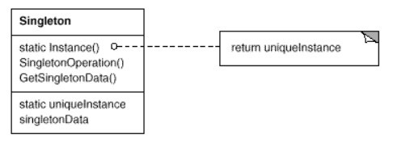

浅谈设计模式六: 单例模式(Singleton)
Table of Contents
实例
对于一些类来说只有一个实例是很重要的。如，仅有一个文件系统，一个窗口管理者。一个数字滤波器只有一个模数转换器。
那么我们如何确保一个类只有一个实例，而且这个实例能容易的访问？
- 全局变量。一个全局变量能使对象任意访问，但是它并不能防止你实例化多个对象。
- 单例模式。更好方法是让类自己负责保存它唯一的实例。这个类能保证没有其他实例被创建（通过截断创建新对象的请求），而且它提供获取这个实例的方法。
单例模式(Singleton)
传统方式
1: //header file 2: class Singleton { 3: public: 4: static Singleton* instance(); 5: private: 6: static Singleton* pInstance; 7: virtual ~Singleton(); 8: }; 9: 10: //cc file 11: Singleton* Singleton::pInstance = NULL; 12: 13: Singleton::~Singleton() { 14: } 15: 16: Singleton* Singleton::instance() { 17: if(pInstance == NULL) { 18: pInstance = new Singleton(); 19: } 20: return pInstance; 21: }
在单线程环境中，除了中断会有问题，其他基本没问题。
但是，这个实现在多线程环境下是不可靠的。
- 假如线程A进入
instance函数，执行到17行，然后被挂起。在这个挂起点，它刚刚判断出pInstance是null的。 - 线程B现在进入
instance然后执行17行，它发现pInstance是null的，所以它运行18行来创建pInstance指向的Singleton。然后它把pInstance返回给instance的调用者。 - 不久后，线程A被允许继续运行，它立即运行
18行，创建另外一个Singleton并使pInstance指向它。
明显这违背了单例的概念，因为现在有两个 Singleton 的对象。
线程安全的传统方式
使得传统方式线程安全，只要在判断 pInstance 前获取锁就行。
Singleton* Singleton::instance() { Lock lock; // acquire lock (params omitted for simplicity) if(pInstance == NULL) { pInstance = new Singleton(); } return pInstance; } // release lock (via Lock destructor)
但是这个方法开销比较大。每次获取 Singleton 都要获取一个锁，但是实际上，我们只有当初始化 pInstance 时才需要一个锁。也就是只发生在第一次调用 instance 时。如果在一个程序运行时， instance 被调用了n次，我们只需要锁在第一次调用时。当我们知道那n-1次锁是没必要的，那为什么要负担那n次去获取锁？DCLP被设计出来防止这。
The Double-Checked Locking Pattern1
- DCLP
DCLP的关键点是发现，大多数
instance的调用将看到pInstance是非空的，因此根本没必要去尝试初始化它。因此，DCLP判断pInstance是否为空在尝试获取锁前。只有当判断成功（pInstance还没有被初始化）才去获取锁，然后之后这个判断在此进行一次确保pInstance是仍然空的。（所以名字叫双重检查锁）。第二个检查是有必要的，因为从上可以看到，另外的线程可能碰巧初始化了pInstance在pInstance被第一次判断和获取锁之间。DCLP的实现：
Singleton* Singleton::instance() { if(pInstance == 0) { // 1st test Lock lock; if(pInstance == 0) { // 2nd test pInstance =newSingleton; } } return pInstance; }
《Double-Checked Locking》1文章还进一步讨论了很多其他一些实现问题（
volatile的重要性，多线程系统中的缓存问题等），但是没有提到更基础的问题，就是确保DCLP的机器指令以一定的顺序执行。《C++ and the Perils of Double-Checked Locking》2 详细的讲述了这个问题，在以下引用它的内容来说明。 - 指令顺序
考虑
pInstance初始化行：pInstance = new Singleton;
这句话导致3件事情发生：
Step 1：分配内存为
Singleton对象Step 2：在分配的内存里创建
Singleton的对象Step 3：使
pInstance指向分配的内存最重要的关键发现是编译器并不限制要按这样的顺序执行。特别，编译器时常允许交换Step 2和3。现在先看如果这样交换后发生什么。
看如下代码，扩展
pInstance的初始化行成3个连续的上面提到的任务，也就是step 1（内存分配）和3（pInstance赋值）在step 2（Singleton创建）之前。这是编译器会把上面DCLP的代码转换成如下的代码。Singleton* Singleton::instance() { if(pInstance == 0) { Lock lock; if(pInstance == 0) { pInstance = // Step 3 operator new(sizeof(Singleton));// Step 1 new(pInstance) Singleton; // Step 2 } } return pInstance; }
考虑如上的顺序，考虑如下顺序的事件：
- 线程A进入
instance，进行pInstance的第一次判断，获得锁，执行 step 1和3。然后它被挂起。在这点pInstance是非空的，但是在内存中并没有创建pInstance指向的Singleton的对象。 - 线程B进入
instance，得出pInstance是非空的，把它返回给instance的调用者。然后调用者解指针来访问 未创建的Singleton。
DCLP能用仅当step1和2在step 3之前完成，但是没有办法表达这一约束在C或C++ 中。C或C++语言没有线程概念，所以编译器不用担心破坏线程类程序当它们被优化时。那么如何用C或C++写多线程的程序呢？使用系统级为了这目的而定义的库，如Posix threads (pthreads)3。
- 线程A进入
- 关键字
volatile想要特殊的指令顺序使得许多人想关键字
volatile是否能起到帮助多线程，特别是DCLP。pInstance需要被声明为volatile的，而且对象Singleton自己也必须是volatile。接下来看仅仅
pInstance被声明为volatile是不够的。考虑如下代码：class Singleton { public: static Singleton* instance(); ... private: static Singleton* pInstance;// volatile added int x; Singleton() : x(5) {} }; // from the implementation file Singleton* Singleton::pInstance = 0; Singleton* Singleton::instance() { if (pInstance == 0) { Lock lock; if (pInstance == 0) { Singleton* temp = new Singleton;// volatile added pInstance = temp; } } return pInstance; }
构造函数内嵌后，代码如下：
if (pInstance == 0) { Lock lock; if (pInstance == 0) { Singleton* volatile temp = static_cast<Singleton*>(operator new(sizeof(Singleton))); temp->x = 5; // inlined Singleton constructor pInstance = temp; } }
尽管
temp是volatile的，但是*temp不是，也就是意味着temp->x也不是。因为我们已经明白赋值给一个non-volatile的数据可能被重新排序，所以很容易的得出编译器能重新排序temp->x的赋值和赋值给pInstance。如果编译器这么做了，那么pInstance就会在数据初始化前就得到赋值，再次导致另外一个线程可能读取到一个未被初始化的x。针对这一症结，把
*pInstance和pInstance自身一样也volatile化。class Singleton { public: static volatile Singleton* volatile instance(); ... private: // one more volatile added static Singleton* volatile pInstance; }; // from the implementation file volatile Singleton* volatile Singleton::pInstance = 0; volatile Singleton* volatile Singleton::instance() { if (pInstance == 0) { Lock lock; if (pInstance == 0) { // one more volatile added volatile Singleton* volatile temp = new Singleton; pInstance = temp; } } return pInstance; }
我们希望上面布满
volatile化的代码能被语言的标准保证正确的运行在多线程的环境下，但是它可能如下两种原因失败。- C++的在可观察行为的标准规范仅仅只针对标准定义的抽象机器，这台抽象机器并没有多个线程运行的概念。所以，尽管标准防止编译器去乱序在一个线程内的对
volatile数据的读写，但是它并没有规范针对在线程间的乱序。所以，实际上，许多编译器可能从上面的代码生成线程不安全的代码。 - 就如
const定义的对象直到构造函数运行结束才成为const，volatile声明的对象成为volatile只当从它们的构造函数返回。如下代码中：volatile Singleton* volatile temp = new volatile Singleton;
这个被创建的对象成为
volatile仅当这句表达式new volatile Singleton;运行完成，也就意味着，我们回到上面的情景，内存分配和对象赋值可能被调换运行顺序。
第二个问题可以被笨拙地解决。只要在
Singleton的构造函数中，我们强制把每个Singleton的数据成员都暂时volatile化，从而防止指令来完成这一系列的初始化。如下的例子：Singleton() { static_cast<volatile int&>(x) = 5;// note cast to volatile } class Singleton { public: static Singleton* instance(); ... private: static Singleton* volatile pInstance; int x; ... }; Singleton* Singleton::instance() { if (pInstance == 0) { Lock lock; if (pInstance == 0) { Singleton* volatile temp = static_cast<Singleton*>(operator new(sizeof(Singleton))); static_cast<volatile int&>(temp->x) = 5; pInstance = temp; } } }
但是，还是没有解决第一个问题。
- C++的在可观察行为的标准规范仅仅只针对标准定义的抽象机器，这台抽象机器并没有多个线程运行的概念。所以，尽管标准防止编译器去乱序在一个线程内的对
实际的使用
- 回到线程安全的传统方式
使用之前的线程安全的传统方式，使用来自线程库的锁来确保线程安全的 Singleton初始化，然后做时间开销的统计看是否需要担心。
这里用
pthread库，写出完整的代码，代码实例在这里。- 首先封装
pthread_mutex_tclass PThreadMutex { public: explicit PThreadMutex(base::LinkerInitialized) { pthread_mutex_init(&mutex_, NULL); } PThreadMutex() { pthread_mutex_init(&mutex_, NULL); } ~PThreadMutex() { pthread_mutex_destroy(&mutex_); } void Lock() { int rc = pthread_mutex_lock(&mutex_); assert(rc == 0); } void Unlock() { int rc = pthread_mutex_unlock(&mutex_); assert(rc == 0); } private: pthread_mutex_t mutex_; DISALLOW_COPY_AND_ASSIGN(PThreadMutex); }; typedef PThreadMutex Mutex;
- 继承封装成一个
MutexLockclass MutexLock { public: explicit MutexLock(Mutex* mutex) : mutex_(mutex) { mutex->Lock(); } ~MutexLock() { mutex_->Unlock(); } private: Mutex* mutex_; DISALLOW_COPY_AND_ASSIGN(MutexLock); };
- 线程安全
Singleton主函数Singleton* Singleton::instance() { cout << "call the singleton instance" << endl; static Mutex mutex_(base::LINKER_INITIALIZED); MutexLock l(&mutex_); if (pInstance == NULL) { cout << "In the Lock" << endl; pInstance = new Singleton(); } return pInstance; } // release MutexLock (via MutexLock destructor)
然后在每个需要要到访问这个单例对象的线程开始，调用
instance，在本地线程内存缓存返回的指针，如下：Singleton* const instance = Singleton::instance(); // cache instance pointer instance->transmogrify(); instance->metamorphose(); instance->transmute();
- 首先封装
- 提前初始化
另一种安全的做法是提前初始化，也就是初始化单例资源在程序最开始运行时。因为多线程程序基本以单线程开始，这个方法可以把一些对象初始化放到单线程的那部分代码，来达到消除需要担心在初始化时的线程问题。
总结
单例模式(Singleton)结构

组成
- 单例
- 定义一个实例化的操作来让客户能访问它唯一的实例。实例化就是一个函数操作（静态函数在C++里）。
- 对创建自己唯一的实例负责。
目的
确保一个类只有一个实例，并且提供一个访问它的全局点。
应用场景
- 必须仅有一个类的实例，而且它需要从一个明了的地方被客户访问到。
- 当这个唯一的实例应该能被子类扩展，而且客户应该无需更改它们的代码直接使用扩展的实例。